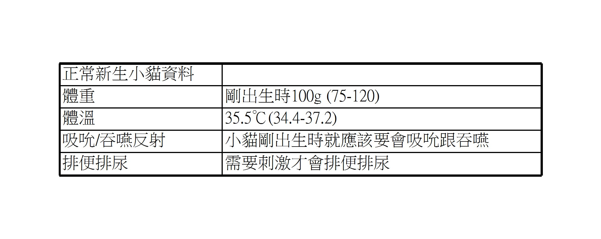
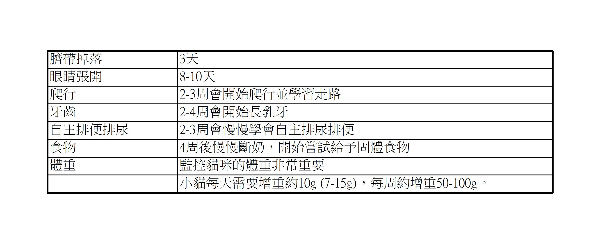

2023-03-31
幼貓照護須知
如何照顧剛出生到4周大的小奶貓?
一般情況下，貓媽媽是照顧小貓最好的人選。小貓出生後，貓媽媽會清理小貓、刺激小貓呼吸，並讓小貓攝取媽媽的初乳來提供抗體及營養。這時，我們只需要給媽媽一個安靜和安全的環境，讓媽媽和小貓相處就好，不須過多的干預。但如果在不得已情況下，我們需要接手照顧新生小貓，這時候需要怎麼做呢?
- 認識新生小貓 剛出生的小貓眼睛和耳朵都是緊閉的，看不到也聽不到，身長約10公分左右，非常脆弱，容易失溫和營養不良，如果在路上撿到小貓，或貓媽媽有狀況無法照顧小貓，請立即將貓咪帶至動物醫院評估狀況，獸醫師將會教您如何正確的飼養小貓，並適時提供醫療的幫助。

- 小貓的環境
- 為小貓準備一個安靜、溫暖的箱子或盒子，底部鋪上乾淨、柔軟的墊子或毛毯，最好是易清洗的材質。避免冷空氣直吹，但要保持通風不能密閉。
- 如果有好幾隻小貓的話盡量讓他們能窩在一起互相取暖，不要將他們分散。
- 0-1周小貓容易失溫，為他們保暖非常重要，但不要將熱水袋或電熱毯直接接觸小貓，因為這些器材有讓小貓燙傷的風險。若使用紅外線暖燈的話，需要距離小貓60公分以上。
- 另外，保溫設備可以放在箱子的其中一側即可，如果小貓覺得太熱，還有機會自己移動到較涼爽的區域。
- 小貓的餵食
- 餵食對於小奶貓來說是至關重要的。請給予小奶貓專用的配方奶，請勿給予牛奶或是其他動物的乳製品，小貓可能會拉肚子、脹氣、胃酸逆流、營養不良等。
- 每次餵奶時盡量泡半天到一天的份量就好，避免冷藏太久造成變質。每次餵奶時需要將奶加溫到35-38℃才可以餵。
- 小奶貓每天所需的熱量為每100g體重給予20-25ml的配方奶。
- 0-2周齡的奶貓必須每2小時餵一次奶。2-3周後，餵奶的間隔時間可拉長至3-4小時。
- 舉例來說，體重100g的小奶貓需要每兩小時餵一次2ml的配方奶。
- 餵食一定要注意避免小貓嗆入奶、反流、餵太多、以及注意是否拉肚子。
- 小貓的排泄
- 由於小奶貓的大小便無法自理，因此需要每天用溫暖、柔軟的溼紙巾輕輕擦拭肛門及陰部周圍，以刺激牠排出大小便。每次餵食時都要擦拭看看，排尿應該每次餵食時都會被刺激出來一點點，而排便應會延遲一些，若超過1天都沒排便，需要帶至動物醫院評估貓貓是否便祕。
- 小奶貓正常的尿色是近乎輕徹透明的，而正常大便型態是黃褐色的軟便。
- 小貓的成長歷程

總結來說，照顧剛出生的小貓需要特別的細心和耐心。請確保小貓的溫暖、安全和適當的飲食，並在必要時尋求獸醫的幫助。
Ref: Veronesi MC, Fusi J. Feline neonatology: From birth to commencement of weaning - what to know for successful management. J Feline Med Surg. 2022 Mar;24(3):232-242. doi: 10.1177/1098612X221079709. PMID: 35209772.